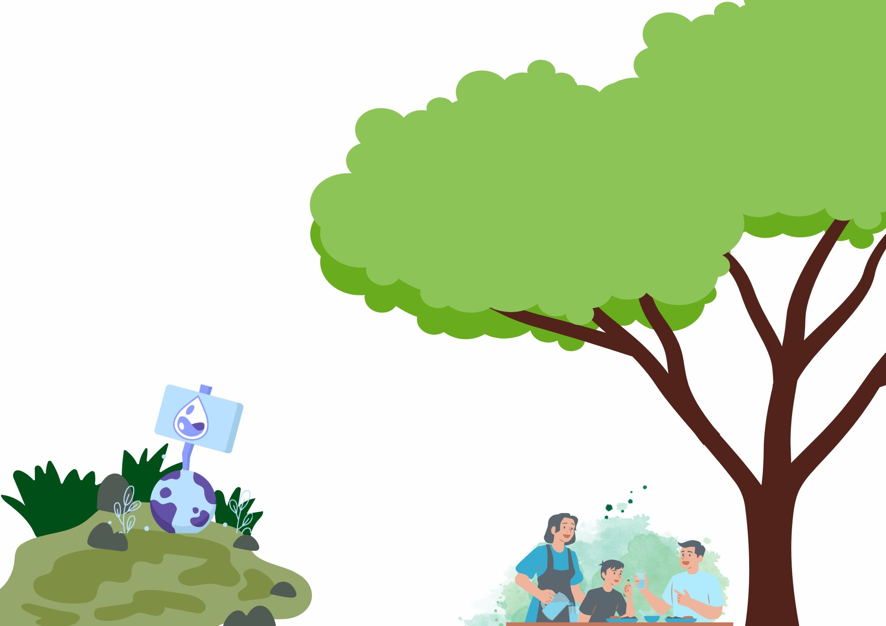

Seja bem vindo a nossa página de instruções dentro do nosso projeto! Nossa ideia é instruir de maneira educativa, qual a importância da sustentabilidade da água sobre o planeta por meio dos nossos jogos quizzes. A água é um recurso essencial para a vida e o equilíbrio ambiental. O consumo responsável e consciente desse recurso é crucial para garantir sua disponibilidade para as futuras gerações. A prática inadequada de uso e a poluição das fontes hídricas podem resultar em escassez, comprometendo ecossistemas e a saúde das populações. É imperativo adotarmos medidas sustentáveis em nosso cotidiano para proteger esse bem precioso e assegurar um futuro saudável para todos.
Apenas aproximadamente 2,5% da água presente no planeta é considerada potável, e, dentre essa porcentagem, uma fração significativa está retida em geleiras e aquíferos profundos, tornando-a inacessível para o uso humano imediato. O uso inadequado e o desperdício desse recurso vital podem resultar em sérias consequências, como a escassez hídrica, que compromete a agricultura, a saúde pública e a estabilidade dos ecossistemas. Além disso, a poluição das fontes hídricas não apenas degrada a qualidade da água, mas também causa danos irreparáveis ao meio ambiente, aumentando os riscos de doenças e afetando a biodiversidade. Assim, é imperativo que sejam adotadas práticas sustentáveis e orientações adequadas para a preservação desse recurso essencial, garantindo sua disponibilidade para as gerações futuras.